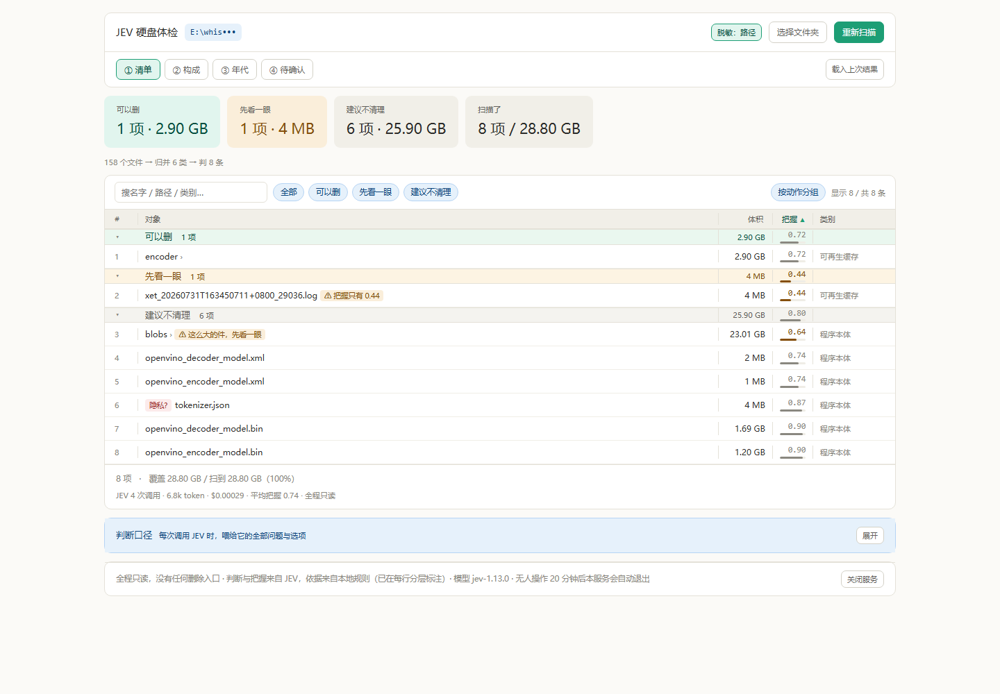
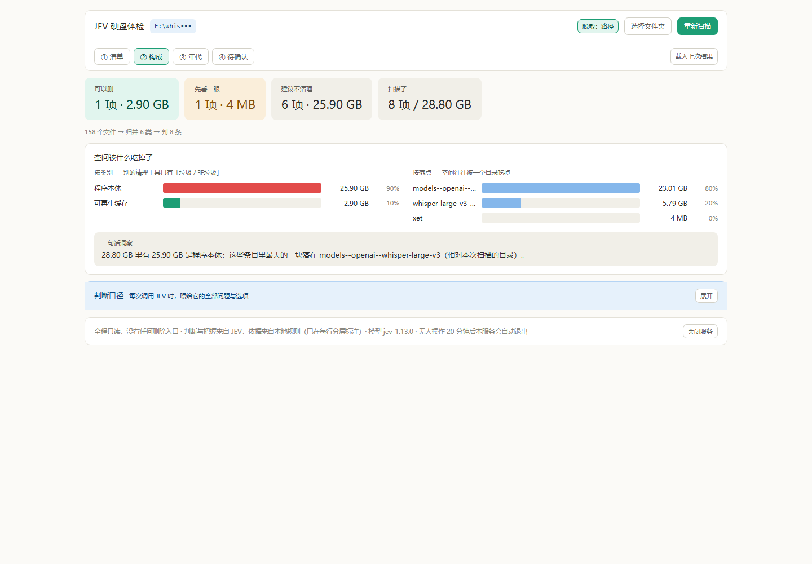

七项全修完了，另外还修掉一处我自己在修的过程中新引入的缺陷——是端到端测试逮出来的，不是我回头看出来的。
最要紧的那条其实只有一个根因：界面在数据到齐之前就开始画了。 同一个屏幕上「3 次调用」和真值「4 次」打架、「归并 6 类」整段消失——都是它。
改动量 index.html +212/-35 · server.py +44/-2 · config.json 零改动。
验收 96 条断言全绿（8 + 28 后端，22 纯逻辑，38 浏览器端到端）。
回退点 _backup/usability-fix-20260920-161743/，拷回两个文件即可。
不读代码猜，先把界面点一遍。我在真实 Edge 里真扫了一次 E:\whisper_models（158 个文件 / 4 次调用 / 约 $0.0003），
然后拿屏幕上显示的数字去和缓存文件里的真值对账。
| 屏幕 / 真值 | 修复前 | 结论 |
|---|---|---|
| 列表脚注的调用次数 | 3 次 · 6.0k token | 真值是 4 次 / 6806 token |
| 概要行 | 158 个文件 → 判 8 条 | 「归并 6 类」整段没了 |
| ② 构成 · 按落点 | 1 格 ["E:"] | 一根 100% 的柱子 |
| 一句话洞察 | 最大的一块堆在 E: | 等于没说 |
| 脱敏最大档下的路径 | E:\whisper_models\whisper-large-v3-openvino\encoder | 原样暴露 |
| 清单（搜索/筛选/折叠） | 一个都没有 | 只能滚 |
| 「载入上次结果」 | 永远只载最新那份 | 20 份缓存没法挑 |
改动散在二十多个地方，硬改很容易误伤。所以我沿用上一轮的规矩：
_backup/usability-fix-20260920-161743/，原件、补丁脚本、命中日志都在。PY_SYNTAX_OK、scripts=1 errors=0。
查下来根因只有一个，而且很朴素——poll() 里先 render()，再给状态赋值：
if (s.items.length) { ...; render(); } // ← 先在旧的 DEDUP / USAGE / FILE_COUNT 上画了一遍
...
if (s.dedup) DEDUP = s.dedup; // ← 数据这才进来，慢一拍
if (s.usage) USAGE = s.usage;
更要命的是收尾那一次轮询没有新条目——于是连 render() 都不进。
「归并 6 类」和最终 token 数从头到尾没机会上屏，列表脚注永远停在倒数第二次的 3 次调用上。
修法两步：把状态吸收挪到渲染之前（抽成 absorb(s)），并在收尾时补画最后一帧。
「按落点」分组时，剥的是用户主目录而不是本次扫描的根。
扫 C 盘没问题，扫 D 盘、E 盘时一个都匹配不上——于是所有条目全归到 "E:" 一格。
抽出 locOf()，优先剥扫描根、其次退回主目录。
models--openai--whisper-large-v3 80% / whisper-large-v3-openvino 20% / xet）。名字列打码了（Git-•••.exe），展开的完整路径从头到尾没打码——因为那条路径只过了 mask()（只管主目录里的用户名），没过管文件名的 maskName()。
新增 maskPath()：最大档下逐段盖住每一层，只留盘符，并统一用在列表、展开弹窗、缓存列表三处。
E:\whisper_models\whisper-large-v3-openvino\encoder
→ 修后 E:\whis•••\whis•••\enco•••
实测 560px 可视 / 68,094px 内容 = 要滚 122 屏，而且分组条不能点、没有筛选、没有搜索。 重复条目是「同签名一并判定」的，可这句话只藏在 hover 提示里。
加了一条工具条：搜索框（名字 / 路径 / 类别都能搜）、四个动作筛选项、「按动作分组」开关、「显示 N / 共 M 条」计数； 分组条现在可点击折叠；搜不到时有明确空态而不是白屏。
表头原话是「点这列排序，没把握的会浮上来」，但排序是组内的——全列表最小的 0.07 可能躺在第 24 行。
两件事：把文案改成实话（说明是组内排序），并给一个「按动作分组」开关——关掉之后就是真正的全局排序。
0.49 → 0.61 → 0.70 → 0.70 → 0.75 → 0.87 → 0.90 → 0.90，最小的确实浮上来了。
缓存目录里躺着 20 份结果，界面上没有任何选择入口——录屏时想挑一份最好看的都挑不了。
服务端 /api/caches?meta=1 多回一份元数据（扫描根 / 时间 / 文件数 / 体积）。
不整份读 JSON——那些文件动辄几 MB，20 个都读太慢；root、created 这些键在 json.dump 时排在最前面，读开头 2KB 就够。
第一版折叠是这么实现的：被折叠的组，条目在图里被过滤掉，于是那一组的分组条也跟着消失了。
结果端到端测出这个数字：折叠前 8 行 → 折叠后 7 行 → 再点 6 行。
点第二次不是在展开，是把下一个组也收起来了——因为第一个组已经不在页面上，脚本点到了别的组。 用户一旦收起某个组，就再也点不开它。
修法：折叠不再参与过滤，只在渲染条目时跳过，组头一律保留，并标出「· 已收起」。
这件事值得单独拎出来说：它不是我回头审出来的，是测试自己撞出来的。 我第一版的断言写得很粗（点「第一个分组条」），结果它连续两次点到不同的组，暴露出行为异常。 后来我把断言改成锁定同一个组，并额外钉上「组头必须还在」——这条现在是最有价值的回归防线之一。
| 项目 | 修复前（实测） | 修复后（实测） |
|---|---|---|
| 列表脚注 · 调用次数 | 3 次 | 4 次 = 缓存真值 |
| 列表脚注 · token | 6.0k | 6.8k = 6806 |
| 概要行 | 158 个文件 → 判 8 条 | 158 → 归并 6 类 → 判 8 条 |
| ② 按落点 | 1 格 ["E:"] | 3 格（真实子目录） |
| 折叠 8 行的「可以删」组 | 8 → 7 → 6（点不回来） | 8 → 7 → 8 |
| 最大档下的展开路径 | 原样暴露 | E:\whis•••\whis•••\enco••• |
| 缓存回放 | 只有最新那份 | 20 份可选，带目录与时间 |
| 端到端断言 6 / 28 通过 → 38 / 38 通过 | ||

① 清单：工具条在表头上方，概要行补回了「归并 6 类」，脚注是 4 次调用 / 6.8k token。顶栏的路径已按当前档位脱敏。

② 构成：「按落点」现在是三根真实子目录的柱子（原来是一根 100% 的「E:」），洞察也跟着变成一句有用的话。
| 文件 | 条数 | 管什么 |
|---|---|---|
tests/test_fixes.py | 8 | 上一轮的四个后端缺陷（junction / 单批失败 / 缺字段 / 计数） |
tests/test_adversarial.py | 28 | 上一轮的对抗性攻击面（类型错、全批失败、口径分歧…） |
tests/test_ui_logic.mjs | 22 | 本轮：脱敏路径、按落点、搜索/筛选——从 index.html 直接抠出函数来验 |
tests/ui_verify.cjs | 38 | 本轮：真实 Edge 点一遍 + 真扫一次，屏幕数字对缓存真值 |
tests/ab_compare.py | — | 上一轮的 A/B 对照工具（新旧两版喂同一份畸形回包） |
跑法（在 jev-disk-mvp/ 下）：
python tests\test_fixes.py python tests\test_adversarial.py node tests\test_ui_logic.mjs node tests\ui_verify.cjs "E:\whisper_models" # 需要 8849 服务带 key 起好
<script> 里，直接 import 会把 boot() 一起跑起来（要服务、要 key）。
所以测试文件从源码里把目标函数连同它依赖的 mask()/bucketOf()/rc() 一起抠出来，配上最小依赖在 Node 里跑。
好处是函数一改名、一改行为，当场就红，而且验的是真身不是仿写版。
第一次跑纯逻辑测试时报了一条红：只勾「建议不清理」：留 1 条，实际返回空数组。
我没有直接改产品代码——先做了个最小复现，把沙箱里每条条目归到哪一组打出来看。结果：沙箱完全正确，
错在我自己的测试脚本——call() 已经取过名字了，断言里又 map 了一遍，拿到 undefined。
这条写进来是因为它说明了一件事：先写测试的价值不只在防产品 bug，也在于它会逼你把测试本身也验一遍。
如果我直接去改 fltItems，就会去修一个根本不存在的问题。
说清楚哪些没做，比说「全修好了」有用：
tabindex 0 个、aria 0 个、没有快捷键。这一轮完全没碰——它是独立的一块工作，且更适合在发布前集中做一次。整体回退：把存档里的 index.html 和 server.py 拷回项目根目录即可。想只退一半也可以，两个文件互相独立。
这一轮所有「实测」都是本机真实执行：3 次真扫 E:\whisper_models（每次 4 次调用 / 6806 token / $0.00029）、1 次真实浏览器全流程走查。
扫描产生的缓存文件在 jev-disk-mvp/cache/（已在 .gitignore 里），可以随时删。